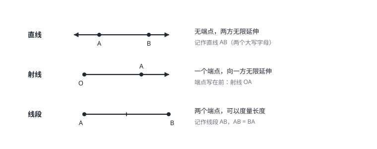

直线、射线、线段
直线无端点向两方无限延伸，两点确定一条直线；射线有起点无终点；线段有两个端点、可以度量。两点之间线段最短，两点的距离由此定义。这三件最简单的图形是整个几何的原子。
| 所属主题 | 图形的初步认识 |
|---|---|
| 所属模块 | 几何 |
| 课标学段 | 第四学段（7~9 年级） |
| 前置知识 | 实数及其运算、几何图形与展开图 |
| 核心素养 | 几何直观抽象能力 |
教材定位
人民教育出版社《人教版（2024版）义务教育教科书·数学》
七年级上册第6章 几何图形初步6.2 直线、射线、线段
对应七上 6.2：两点确定一条直线、线段的比较与运算、两点间距离与中点。
说明
几何从最简单的三件东西开始。直线没有端点，向两个方向无限延伸，不能度量长度；用两个大写字母表示（直线 AB），字母顺序可以交换。射线有一个端点，向一个方向无限延伸；端点必须写在最前面（射线 OA 与射线 OA 方向一致，但与射线 AO 不是同一条）。线段有两个端点，长度可以度量；记作线段 AB 或线段 BA。
两条基本事实（公理）从它们身上来：过两点有且只有一条直线——「两点确定一条直线」；两点之间的所有连线中，线段最短。第二条直接给出了「两点的距离」的定义：线段 AB 的长度就是 A、B 两点间的距离。距离是一个数，线段是一个图形，两者不能混着说。
使用场景
测量与放线类问题靠「两点确定一条直线」：木工弹墨线前只要在木料两端各钉一枚小钉；把多根电线杆排成一条直线时，只要定住两端的杆，中间的杆贴线即可。
「两点之间线段最短」回答一切「走哪条路近」的问题：从 A 到 B，直的那条最短。它也是后面一切「距离」类计算的出发点——已知两边求第三边的范围时，上下限正是「不能摊平成一条线段」的要求。
注意点
直线和射线不能谈长度。「延长直线 AB」是错话——直线本来就无限长，能延长的是线段；「延长线段 AB」指从 B 端沿 A 到 B 的方向继续，「反向延长」则从 A 端往回。方向词必须看清。
「A、B 两点的距离是线段 AB」是典型的错句：线段是图形，距离是这条线段的长度，是一个数。答题时写「距离为 5 厘米」而不是「距离是线段 AB」。
证明

图 1：直线、射线、线段的对照。直线无端点，射线一个端点，线段两个端点且可度量
证明
结论 1过两点的直线有且只有一条。
「两点确定一条直线」是基本事实，靠验证不靠证明：拿一根硬纸条和一枚图钉，把纸条按在软木板上，纸条还能绕钉子自由旋转——过一点的直线（方向）有无穷多条；再钉一枚图钉钉住第二个孔，纸条立刻纹丝不动——经过这两点的方向只剩一个。（图 1 把三种线并排对照）
关键一步依据是这条属于基本事实（公理），初中阶段只承认、不证明，所以它靠对照实验验证而不是靠定理推导。演示抓住的正是「一个点定不住方向、两个点才定得住」：过一点的方向有无穷多条，钉住第二个孔后方向只剩一条。
结论 2两条不同的直线最多只有一个公共点；一旦有两个公共点，它们必定重合为同一条。
从「两点定一线」还能推出：两条不同的直线最多有一个公共点。假如两条直线有两个公共点 A、B，那么「过 A、B 的直线」同时是这两条，与基本事实矛盾——所以两条直线一旦有两个公共点，它们必定重合，是同一条。
关键一步依据是「两点确定一条直线」这条基本事实本身：过 A、B 的直线有且只有一条，若两条直线都过 A、B，它们就都必须是这一条，于是重合、并非两条不同的直线。矛盾的落点明确在基本事实上，不是看图看出来的。
结论 3两点之间线段最短；两点间的距离就是线段的长度。
「两点之间线段最短」同样列为基本事实：把从 A 到 B 的各种路线与线段 AB 比长短，直的那条永远最短。「两点间的距离」用线段的长度来定义，正是因为它在所有连法中长度最小——拿这个最短长度当距离，名正言顺。
关键一步依据是「两点之间线段最短」这条基本事实——它同样只靠比较验证、不能靠证明。它同时是「两点间距离」这个定义的依据：所有连法中线段 AB 的长度最小，拿它当 A、B 之间的距离才符合「取最短」的含义。
动手实验
取一根硬纸条、两枚图钉和一块软木板：先只按一枚图钉，转一转纸条，感受「过一点无数条直线」；再按第二枚，纸条固定不动。然后画 A、B 两点，先随意画一条折线连接，再直尺连线段，用圆规比较两段的长——折线明显更长。
解题思路
数线段（或数直线上的图形）用「按左端点分类」：直线上 n 个点，从最左的点向右数，能连 n−1 条线段；第二个点向右 n−2 条……加到 1 为止，总和是 n(n−1)/2。逐条列举（AB、AC、AD、BC、BD、CD）可以核对结果，漏数重数都能查出来。
线段的和差与中点：中点 M 满足 AM=MB=AB/2。图形里出现「C 是 AB 中点」「AB=2AM」这类条件，先全部换算成同一条线段的表达再计算；「一条线段被分成两段，全长等于两段之和」就是列方程的等量关系。比较两条线段长短可以用圆规截取（叠合法）：一个端点对齐，看另一个端点落在内、外还是恰好重合。
按场景的例题
例 1（场景：测量与工程） 木工弹墨线定直线
木工要在木料上弹出一条笔直的墨线，只在木料两端各钉一枚小钉，绷紧的墨线一弹就直。为什么两枚钉子就够？
解：一枚钉子时，墨线可以绕着钉子任意摆动，方向定不下来——过一点有无数条直线。绷紧的墨线要同时经过两枚钉子，而经过两点的直线有且只有一条，所以整条线的位置被唯一确定，弹出的墨线就是直线。
答：两点确定一条直线：过一枚钉有无数条，过两枚钉只有一条。
例 2（场景：生活优化） 从教学楼到公交站选路
从教学楼门口 A 到公交站 B，一条直路长 90 米；另一条绕花坛的路先走 70 米再走 60 米。走哪条近？近多少米？
解：绕花坛的路是折线（两段 70+60=130 米），直路是连接 A、B 的线段。两点之间线段最短，所以 90 米的直路更短，近 130−90=40 米。
答：走直路，近 40 米。
例 3（场景：图形设计） 设计图上数线段
设计图的一条基准线上标了 A、B、C、D 四个点，以这些点为端点的线段共有多少条？请全部列出来。
解：按左端点分类数：以 A 为左端点的有 AB、AC、AD 共 3 条；以 B 为左端点的有 BC、BD 共 2 条；以 C 为左端点的有 CD 共 1 条。合计 3+2+1=6 条，与公式 4×3÷2=6 一致。
答：共 6 条：AB、AC、AD、BC、BD、CD。
常用推论
直线上 n 个点两两组成线段，共 n(n−1)/2 条——分类列举求和的结果，可以当成公式用，也可以当公式验。
线段中点把线段分成相等的两段：AM=MB=AB/2；反过来「AM=MB=AB/2」三个等式里任何两个成立，M 就是中点。
两条直线有公共点时，公共点至多一个；「两条直线有两个公共点」意味着它们重合。
易错点
错射线 AB 与射线 BA 是同一条射线。
为什么错射线有方向：射线 AB 的端点是 A，向 B 的方向延伸；射线 BA 的端点是 B，向 A 的方向延伸。两条射线的端点不同、延伸方向也相反。
正确表示射线必须端点在前：射线 AB 与射线 BA 是两条不同的射线。
错「A、B 两点间的距离是线段 AB」。
为什么错线段是图形，距离是这条线段的长度，是一个数。图形和数不能划等号。
正确A、B 两点间的距离是线段 AB 的长度，例如「距离为 3 厘米」。
错把「延长线段 AB」与「反向延长线段 AB」当成同一个动作。
为什么错延长线段 AB 是从 B 端沿 A→B 的方向继续画；反向延长是从 A 端沿 B→A 的方向往回画。端点不同，画出的部分完全不同。
正确读题先确认延长哪一端：字面上「延长 AB」在 B 端接，「反向延长 AB」在 A 端接。
直观理解
三种线可以各配一个实物：直线像铁轨——抽象掉端点，两方无限延伸；射线像手电筒的光束——从灯头这一点出发一路向前；线段像剪下的一段绳子——有两个头，可以拿尺子量。图上画的线段两端画上小圆点只是提醒「到这儿为止」，射线画箭头是提醒「还在往前走」。